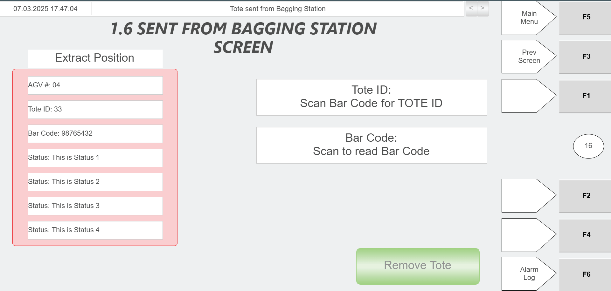
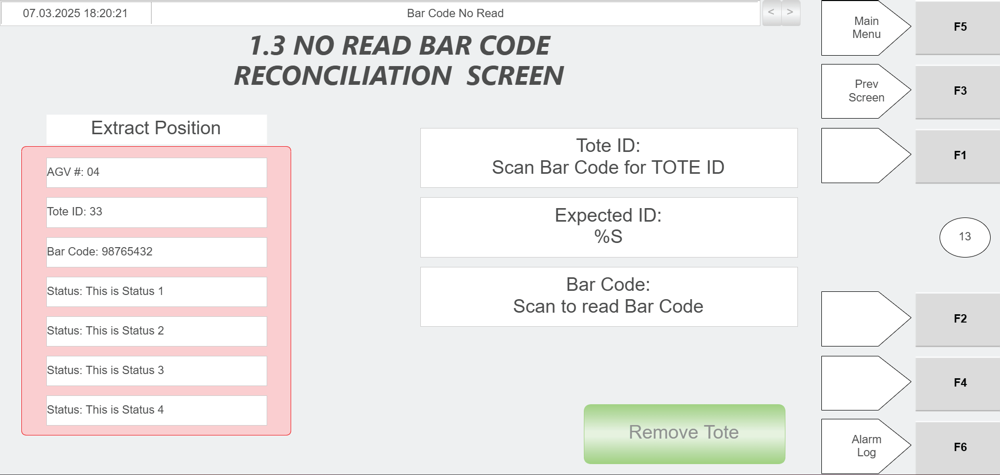

| Procedure ID | proc_extract_arriving_tote_hospital_station_hmi_green_scanner_v1 |
|---|---|
| Title | Extract an Arriving Tote at the Hospital Station Using Hospital HMI and Green Scanner |
| Procedure Type | operation |
| Primary Role | operator |
| Support Safe | Yes |
| Capability Tags | tote_lifecycle_state |
| Access Surface | hospital_hmi |
| Audience Roles | operator |
| Failure Pattern Tags | None |
| Validation Status | needs_sme_review |
| Merge Status | source_finalized |
When an AGV brings a tote to the Hospital Station, use the Hospital HMI to open the correct tote-extraction screen based on the status fields, scan the tote barcode with the green scanner to populate the Tote ID field, and then perform the task indicated by the status fields. If the tote is being returned into the system, place it on the induct side (left) and ensure it is flush against the end stops.
Use this procedure when an AGV arrives at the Hospital Station with a tote and you need to extract the tote using the Hospital HMI workflow (screen selection driven by status fields), scan the tote barcode with the green scanner, and then execute the task indicated by the status fields.



Responsible role: operator
Instruction:
Visually confirm the AGV has brought a tote to the right side of the Hospital Station.
Expected result:
A tote is physically present at the Hospital Station right side designated for AGV tote delivery/extraction.
Responsible role: operator
Instruction:
On the Hospital HMI / lane UI, open the corresponding screen used to extract the tote from the system. Select the screen based on the information shown in the status fields.
Expected result:
The Hospital HMI tote-extraction screen corresponding to the arriving tote is open, showing status-field information used to determine the workflow.
Responsible role: operator
Instruction:
Scan the tote barcode using the green scanner.
Expected result:
The scan is accepted by the Hospital HMI workflow and the Tote ID field begins to populate after scanning.
Stop or Escalate If:
Responsible role: operator
Instruction:
Verify that the Tote ID field automatically populates after scanning.
Expected result:
The Tote ID field on the Hospital HMI is populated with the scanned tote ID.
Stop or Escalate If:
Responsible role: operator
Instruction:
Perform whatever task needs to be performed as determined by the information in the status fields.
Expected result:
The required Hospital Station action for the arriving tote is executed according to the status fields on the active Hospital HMI screen.
Responsible role: operator
Instruction:
If the tote is going back into the system, put the tote on the induct side (left side) of the station and ensure it is flush against the end stops.
Expected result:
The tote is positioned on the induct side (left) and is flush against the induct-side end stops.
Stop or Escalate If: